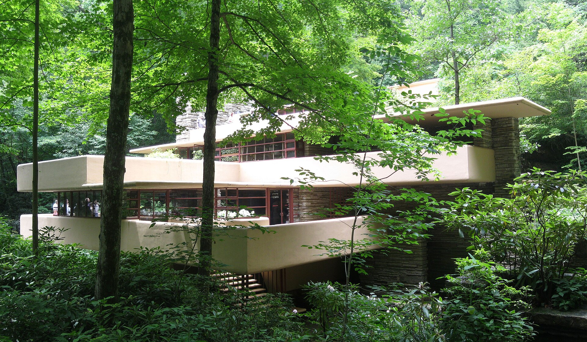
美洲 1935弗兰克·劳埃德·赖特
Frank Lloyd Wright · 1867 – 1959
美国建筑师，草原学派的奠基人。他把水平屋檐、自然材料与连续流动的平面组合在一起，让住宅第一次拥有了向四周展开的姿态，也深刻影响了整个二十世纪的建筑与室内设计。
流水别墅美国 · 宾夕法尼亚州
代表作：罗比住宅（1910，芝加哥，美国）、约翰逊制蜡公司总部（1939，拉辛，美国）、西塔里埃森（1937，斯科茨代尔，美国）、古根海姆美术馆（1959，纽约，美国）
1850 — 今天 · 现代建筑的谱系
从草原住宅到清水混凝土，从巴西利亚的曲线到北京的悬挑结构。 这里收录 17 位改变现代建造方式的建筑师，以及各自最具代表性的一座建筑。

美洲 1935Frank Lloyd Wright · 1867 – 1959
美国建筑师，草原学派的奠基人。他把水平屋檐、自然材料与连续流动的平面组合在一起，让住宅第一次拥有了向四周展开的姿态，也深刻影响了整个二十世纪的建筑与室内设计。
流水别墅美国 · 宾夕法尼亚州
代表作：罗比住宅（1910，芝加哥，美国）、约翰逊制蜡公司总部（1939，拉辛，美国）、西塔里埃森（1937，斯科茨代尔，美国）、古根海姆美术馆（1959，纽约，美国）
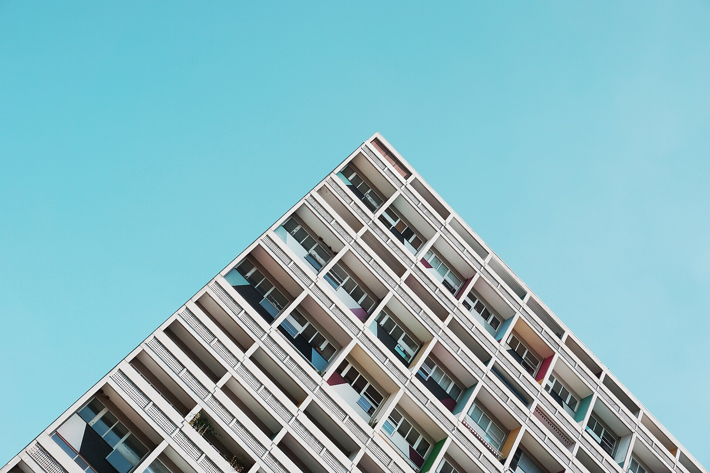
欧洲 1957Le Corbusier · 1887 – 1965
出生于瑞士的法国建筑师、画家与理论家，现代主义建筑最有力的鼓吹者。他提出的新建筑五要素与模度体系，把住宅、城市与公共建筑纳入一套理性的尺度观念；联合住宅是这套观念最完整的一次实验。
柏林联合住宅德国 · 柏林
代表作：萨伏伊别墅（1931，普瓦西，法国）、马赛公寓（1952，马赛，法国）、昌迪加尔行政中心（1953，昌迪加尔，印度）、朗香教堂（1955，朗香，法国）、柏林联合住宅（1957，柏林，德国）
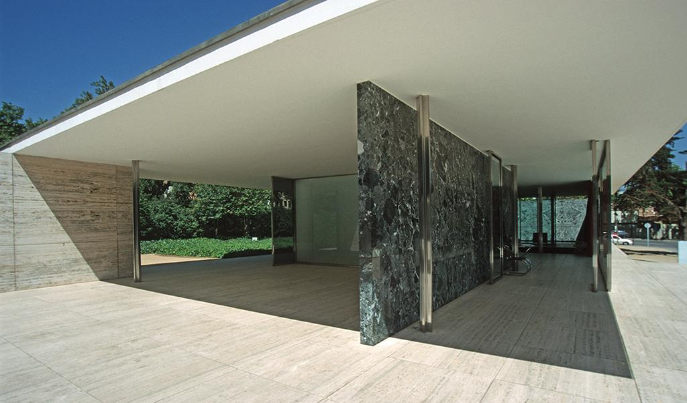
欧洲 1929Ludwig Mies van der Rohe · 1886 – 1969
德国出生的美国建筑师，曾任包豪斯最后一任校长。他以钢与玻璃的精确构造、通用空间与匀质网格，为现代高层建筑与极简主义确立了美学标准。
巴塞罗那馆西班牙 · 巴塞罗那
代表作：巴塞罗那馆（1929，巴塞罗那，西班牙）、图根哈特住宅（1930，布尔诺，捷克）、范斯沃斯住宅（1951，普莱诺，美国）、西格拉姆大厦（1958，纽约，美国）
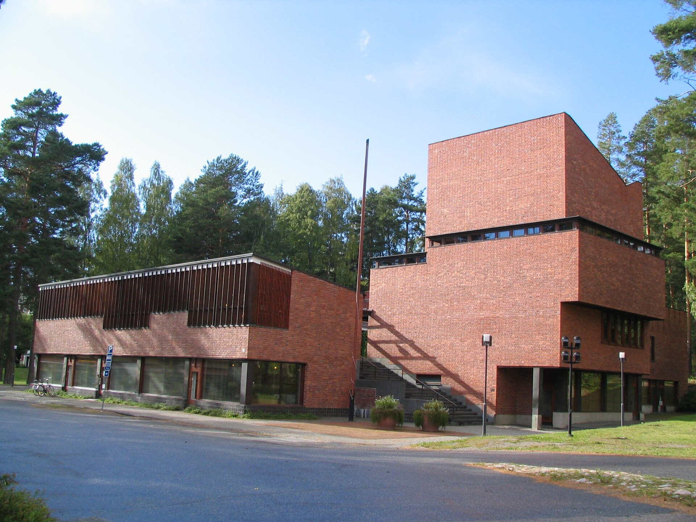
欧洲 1952Alvar Aalto · 1898 – 1976
芬兰建筑师与设计师，北欧现代主义的代表。他把现代主义的功能理性与木材、砖、自然光和人体尺度结合，让公共建筑在理性之外带上地域与心理的温度。
塞于奈察洛市政厅芬兰 · 塞于奈察洛
代表作：帕伊米奥疗养院（1933，帕伊米奥，芬兰）、维普里图书馆（1935，维堡，俄罗斯）、塞于奈察洛市政厅（1952，塞于奈察洛，芬兰）、芬兰地亚大厦（1971，赫尔辛基，芬兰）
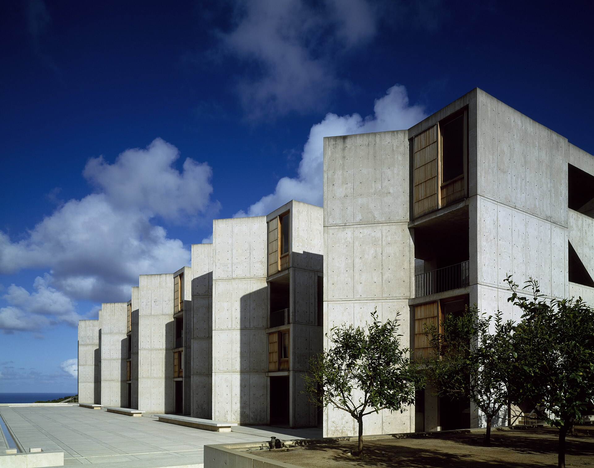
美洲 1965Louis I. Kahn · 1901 – 1974
出生于爱沙尼亚的美国建筑师。他以对材料本性的追问、清晰的受力秩序和纪念性的几何体量，在战后现代主义中开辟出一条静默、厚重而带有精神性的路径。
索尔克研究所美国 · 拉霍亚
代表作：耶鲁大学美术馆（1953，纽黑文，美国）、索尔克研究所（1965，拉霍亚，美国）、金贝尔美术馆（1972，沃斯堡，美国）、孟加拉国国民议会大厦（1982，达卡，孟加拉国）
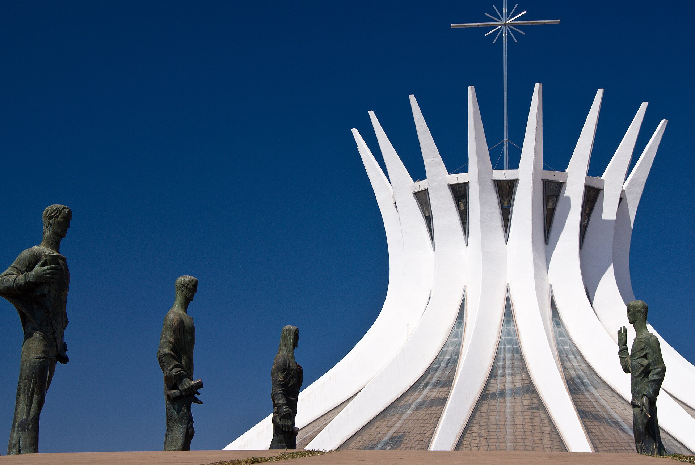
美洲 1970Oscar Niemeyer · 1907 – 2012
巴西建筑师，拉丁美洲现代主义的核心人物。他用钢筋混凝土构造出自由流动的曲线，并在巴西利亚把整座首都变成一次现代主义实验。
巴西利亚大教堂巴西 · 巴西利亚
代表作：潘普利亚圣方济各教堂（1943，贝洛奥里藏特，巴西）、巴西利亚三权广场（1960，巴西利亚，巴西）、巴西利亚大教堂（1970，巴西利亚，巴西）、尼泰罗伊当代艺术博物馆（1996，尼泰罗伊，巴西）
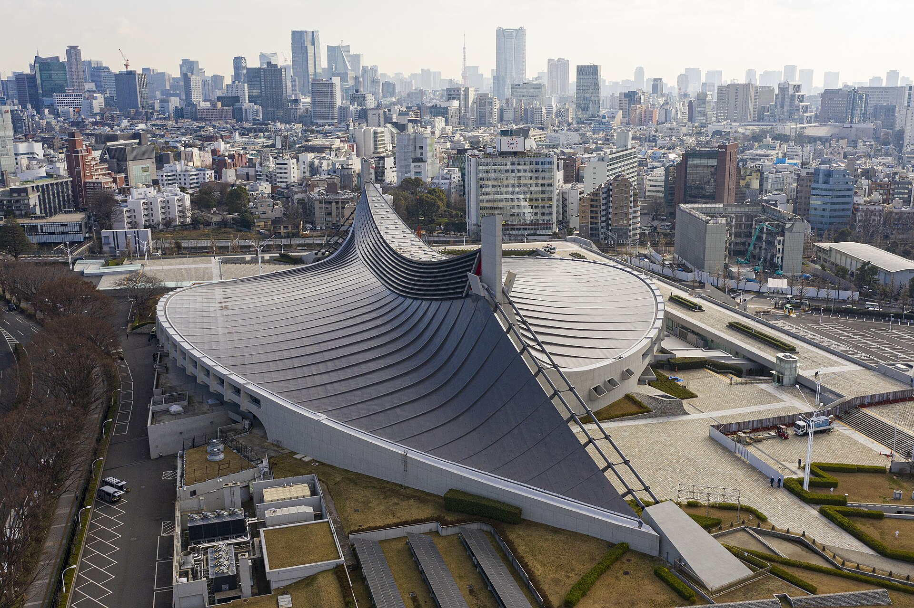
亚洲 1964Kenzo Tange · 1913 – 2005
日本建筑师，战后日本现代建筑的组织者与新陈代谢派的引领者。他为东京奥运会设计的代代木体育馆，让钢筋混凝土与悬索结构呈现出雕塑般的张力。
代代木国立综合体育馆日本 · 东京
代表作：广岛和平纪念资料馆（1955，广岛，日本）、香川县厅舍（1958，高松，日本）、代代木国立综合体育馆（1964，东京，日本）、东京都厅舍（1991，东京，日本）
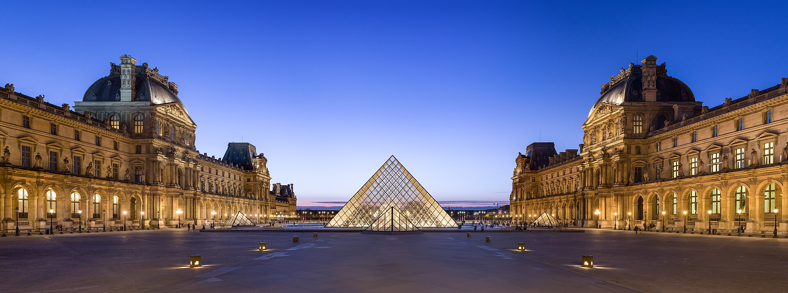
美洲 1989I. M. Pei · 1917 – 2019
华裔美国建筑师，以纯粹的几何、精准的光线与过人的工程胆识著称。从卢浮宫金字塔到苏州博物馆，他总能在历史环境中用现代形式完成一次克制的对话。
卢浮宫金字塔法国 · 巴黎
代表作：美国国家美术馆东馆（1978，华盛顿，美国）、卢浮宫金字塔（1989，巴黎，法国）、香港中银大厦（1990，香港）、苏州博物馆（2006，苏州，中国）、伊斯兰艺术博物馆（2008，多哈，卡塔尔）
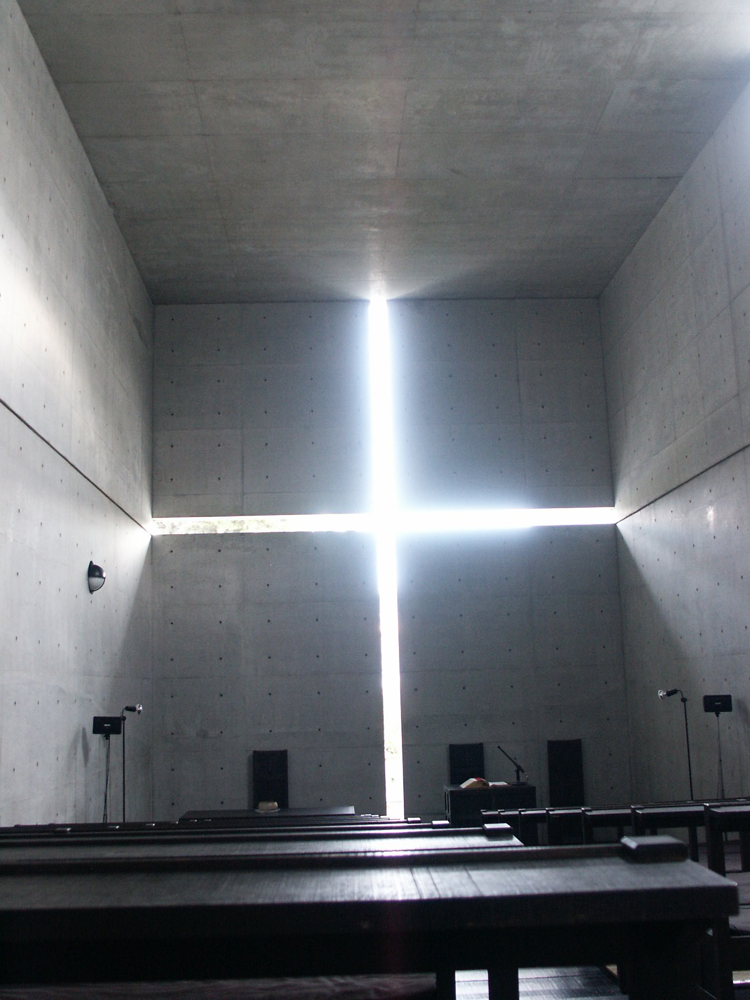
亚洲 1989Tadao Ando · 1941 –
日本建筑师，以清水混凝土、几何体块与自然光塑造出近乎冥想的空间。他的建筑常把外部世界压缩成一道光、一片水或一角天空，让人重新意识到身体的感知。
光之教堂日本 · 茨木
代表作：住吉的长屋（1976，大阪，日本）、水之教堂（1988，北海道，日本）、光之教堂（1989，茨木，日本）、地中美术馆（2004，直岛，日本）
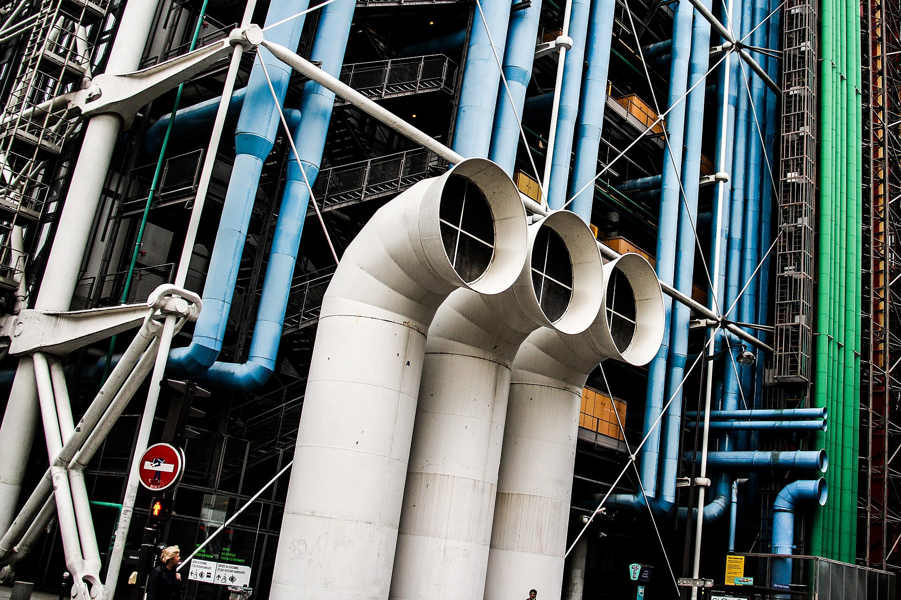
欧洲 1977Renzo Piano · 1937 –
意大利建筑师，高技派的代表人物之一。他与理查德·罗杰斯共同设计的蓬皮杜中心把结构、管线和交通全部翻到立面上，让建筑内部获得了彻底的自由。
蓬皮杜中心法国 · 巴黎
代表作：蓬皮杜中心（1977，巴黎，法国）、关西国际机场航站楼（1994，大阪，日本）、贝耶勒基金会美术馆（1997，里恩，瑞士）、纽约时报大厦（2007，纽约，美国）
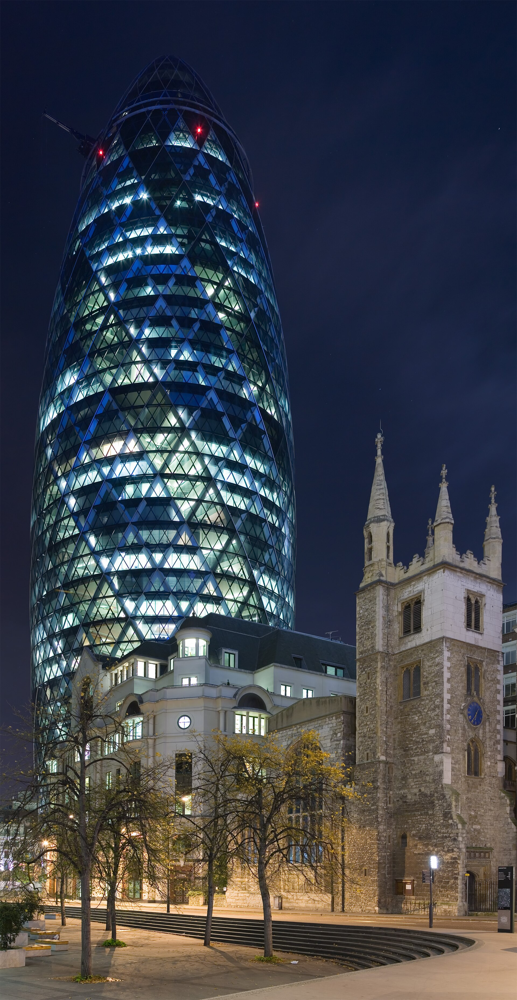
欧洲 2004Norman Foster · 1935 –
英国建筑师，高技派与可持续设计的推动者。他的作品以极致的结构效率、通透的表皮与对城市公共空间的重视著称，从汇丰银行总部到柏林国会大厦改建都属此列。
圣玛丽斧街 30 号英国 · 伦敦
代表作：香港汇丰银行总部（1985，香港）、柏林国会大厦改建（1999，柏林，德国）、圣玛丽斧街 30 号（2004，伦敦，英国）、北京首都国际机场 T3 航站楼（2008，北京，中国）
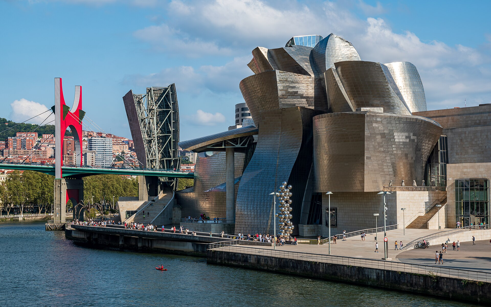
美洲 1997Frank Gehry · 1929 –
加拿大出生的美国建筑师，解构主义的代表人物。他借助数字建模把钛板、扭转曲面与不规则体量变成可建造的现实，也让毕尔巴鄂从工业城市转型为文化地标。
毕尔巴鄂古根海姆美术馆西班牙 · 毕尔巴鄂
代表作：盖里自宅（1978，圣莫尼卡，美国）、维特拉设计博物馆（1989，魏尔，德国）、毕尔巴鄂古根海姆美术馆（1997，毕尔巴鄂，西班牙）、华特·迪士尼音乐厅（2003，洛杉矶，美国）
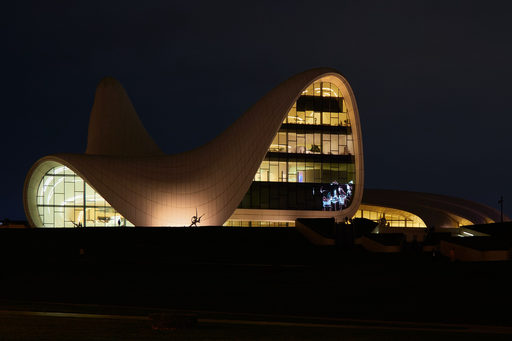
欧洲 2012Zaha Hadid · 1950 – 2016
出生于巴格达的英国建筑师，2004 年成为首位获得普利兹克奖的女性建筑师。她以流体般的曲面、锐利的角度与连续空间，重新定义了建筑中的动势与方向感。
阿利耶夫文化中心阿塞拜疆 · 巴库
代表作：维特拉消防站（1993，魏尔，德国）、广州大剧院（2010，广州，中国）、阿利耶夫文化中心（2012，巴库，阿塞拜疆）、东大门设计广场（2014，首尔，韩国）
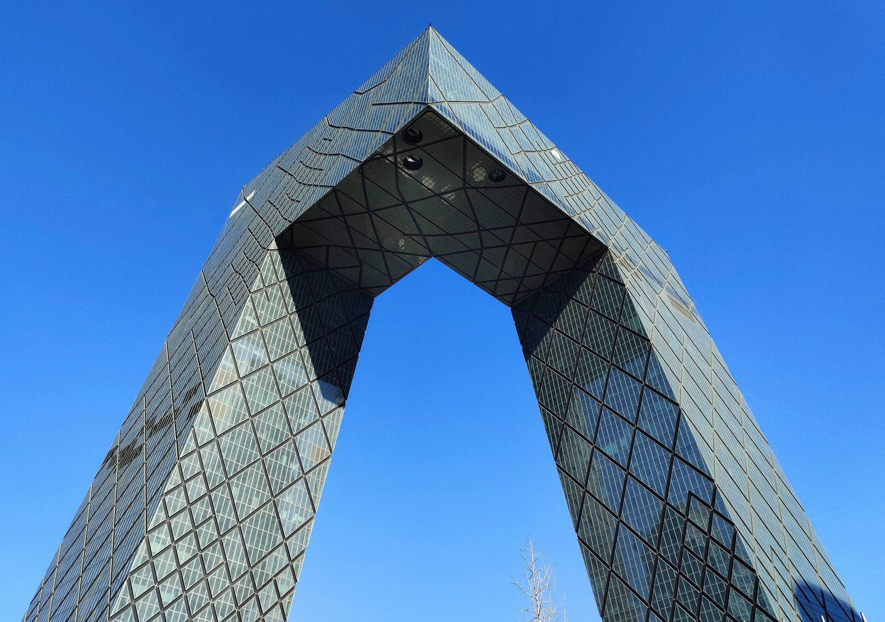
欧洲 2012Rem Koolhaas · 1944 –
荷兰建筑师、理论家，OMA 创始人。他把建筑视为社会、经济与媒体的产物，用策略性的剖面与程序组织回应高密度城市，也以写作持续影响当代建筑讨论。
央视总部大楼中国 · 北京
代表作：康索现代艺术中心（1992，鹿特丹，荷兰）、西雅图中央图书馆（2004，西雅图，美国）、央视总部大楼（2012，北京，中国）、台北表演艺术中心（2022，台北）
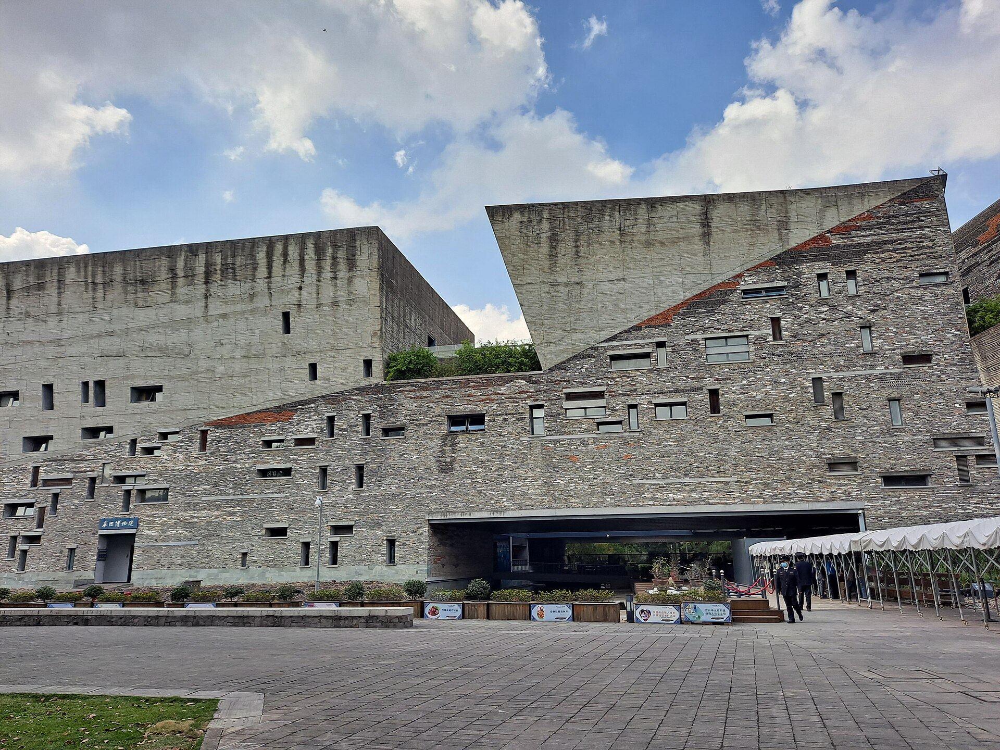
亚洲 2008Wang Shu · 1963 –
中国建筑师，2012 年普利兹克奖得主，与陆文宇共同主持业余建筑工作室。他用回收的旧砖瓦与手工建造方式，回应快速城市化中被抹去的地方记忆。
宁波博物馆中国 · 宁波
代表作：苏州大学文正学院图书馆（2000，苏州，中国）、宁波美术馆（2005，宁波，中国）、宁波博物馆（2008，宁波，中国）、中国美术学院象山校区（2013，杭州，中国）
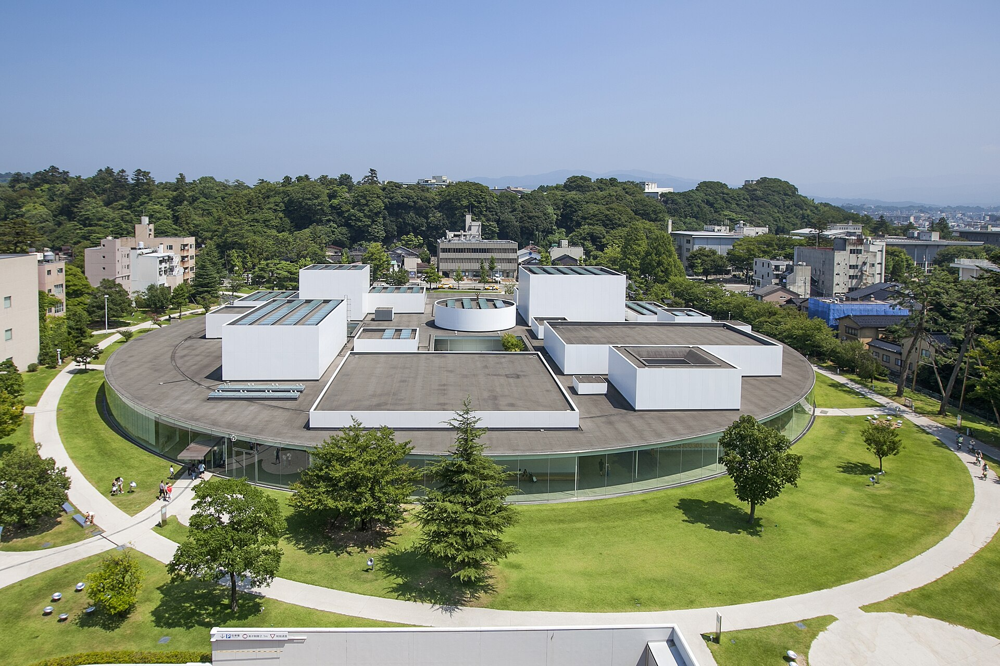
亚洲 2004SANAA · 1956 – / 1966 –
由妹岛和世与西泽立卫组成的日本建筑组合，2010 年获普利兹克奖。他们以白色、通透、近乎无重力的空间与模糊的室内外界限著称。
金泽 21 世纪美术馆日本 · 金泽
代表作：金泽 21 世纪美术馆（2004，金泽，日本）、纽约新当代艺术博物馆（2007，纽约，美国）、劳力士学习中心（2010，洛桑，瑞士）、卢浮宫朗斯分馆（2012，朗斯，法国）
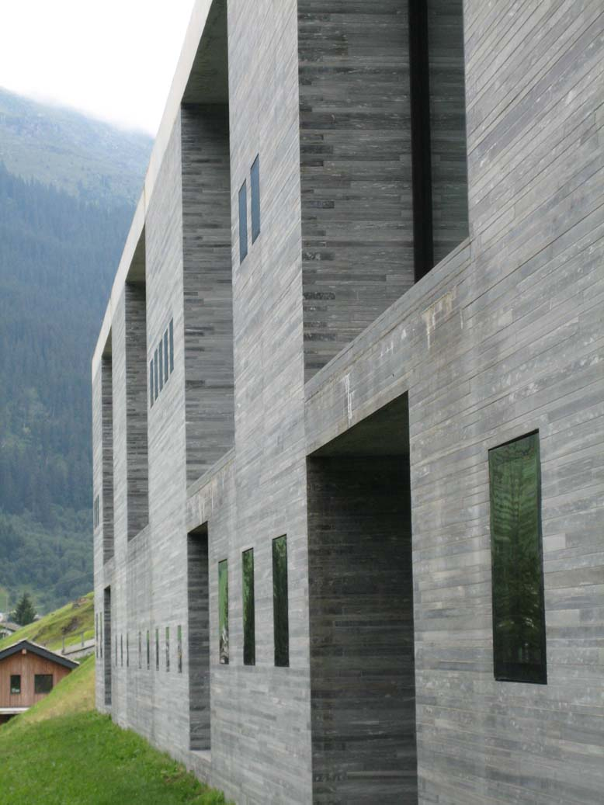
欧洲 1996Peter Zumthor · 1943 –
瑞士建筑师，2009 年普利兹克奖得主。他关注材料的气味、温度与触感，主张把建筑还原为场所、身体与时间共同作用的体验，而非视觉形式的表演。
瓦尔斯温泉浴场瑞士 · 瓦尔斯
代表作：圣本笃教堂（1988，苏姆维特，瑞士）、瓦尔斯温泉浴场（1996，瓦尔斯，瑞士）、科隆巴美术馆（2007，科隆，德国）、布鲁德·克劳斯田野教堂（2007，梅谢尼希，德国）